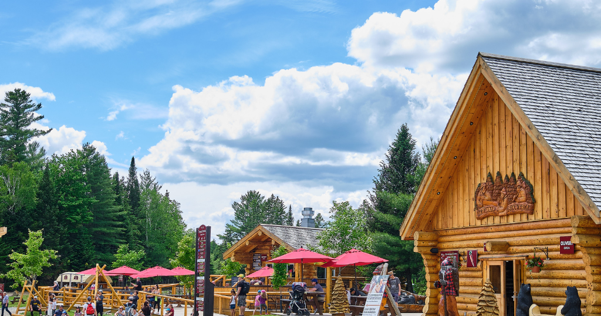

Taking a break from parenting: 4 Weekend Getaways That Are Two Hours or Less from Montreal
Image Credits https://www.thesuburban.com/blogs/parenting_101/parenting-101-4-weekend-getaways-that-are-two-hours-or-less-from-montreal/article_3e650348-0472-11ee-bcd8-c77f47d69ce3.html
As a parent, you don't always have time to plan a long vacation or travel far. Sometimes, all you need is a quick weekend getaway to relax and recharge. Luckily, there are plenty of places near Montreal that make for a perfect family escape. Here are four of our top picks:
Mont-Tremblant

If you're looking for a winter retreat, Mont-Tremblant is an excellent choice. Located only an hour and a half from Montreal, this ski resort offers a range of outdoor activities for both adults and kids. From skiing to snowshoeing, there's something for everyone. Plus, the village of Mont-Tremblant is packed with shops, restaurants, and spas, making it an ideal place to unwind after a day on the slopes.
- Distance from Montreal: 135 km (1.5 hours drive)
- Top attractions: Skiing, snowshoeing, spa, shopping, dining
- Family-friendly rating: 9/10
Eastern Townships

For a taste of the countryside, head to the Eastern Townships. This region is known for its rolling hills, quaint villages, and picturesque lakes. You can go hiking, biking, or kayaking, or simply take a leisurely drive and enjoy the scenery. The Eastern Townships are also famous for their local cuisine, so be sure to sample some of the region's delicious cheeses, wines, and craft beers.
- Distance from Montreal: 120 km (1.5 hours drive)
- Top attractions: Hiking, biking, kayaking, lakes, local cuisine
- Family-friendly rating: 8/10
Ottawa

If you're up for a slightly longer trip, Ottawa is a great destination for families. Canada's capital city has plenty to offer, from museums and galleries to outdoor parks and playgrounds. You can visit Parliament Hill, take a boat tour along the Rideau Canal, or check out one of the city's many festivals or events. Plus, Ottawa is known for its diverse culinary scene, so you'll have plenty of options for dining out.
- Distance from Montreal: 200 km (2 hours drive)
- Top attractions: Museums, parks, festivals, dining
- Family-friendly rating: 7/10
Vermont

If you're craving a change of scenery, why not hop over the border to Vermont? This neighboring state offers a great mix of outdoor activities, cultural attractions, and natural beauty. You can go skiing, visit a maple syrup farm, or explore the charming town of Burlington. And if you're a fan of shopping, Vermont's outlet malls are a must-visit destination.
- Distance from Montreal: 140 km (1.5 hours drive)
- Top attractions: Skiing, maple syrup farms, Burlington, outlet malls
- Family-friendly rating: 8/10
Conclusion
There you have it, four fantastic weekend getaways that are within two hours drive of Montreal. Whether you're in the mood for skiing, hiking, or simply relaxing, these destinations offer something for everyone. So pack your bags and hit the road—an adventure awaits!
- Mont-Tremblant: #MontTremblant, Quebec, skiing, familyvacation
- Eastern Townships: #EasternTownships, Quebec, hiking, familytravel
- Ottawa: #Ottawa, Ontario, museums, familyfun
- Vermont: #Vermont, USA, maplesyrup, familygetaway
Curated by Team Akash.Mittal.Blog
Share on Twitter Share on LinkedIn